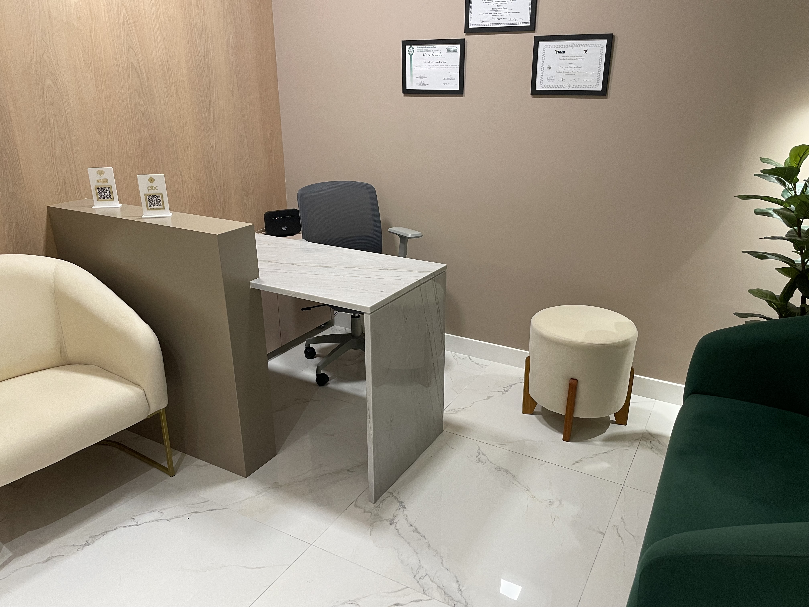
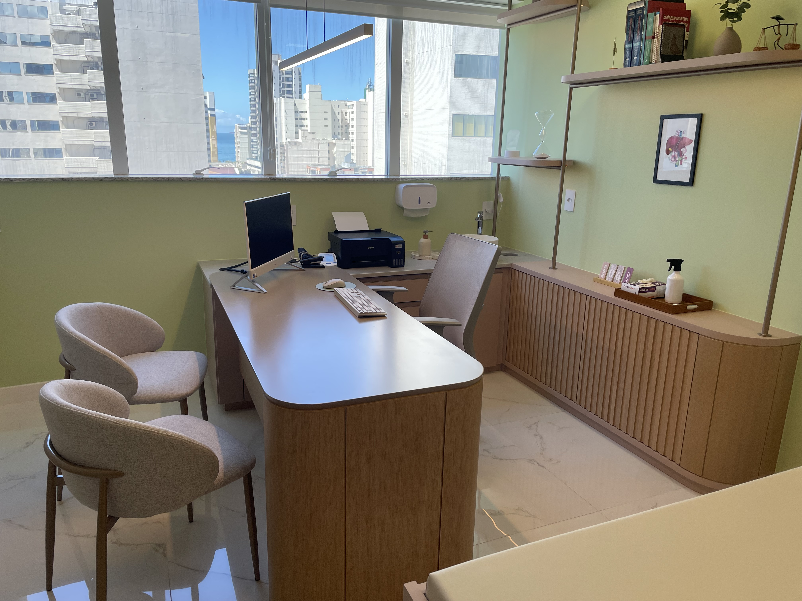
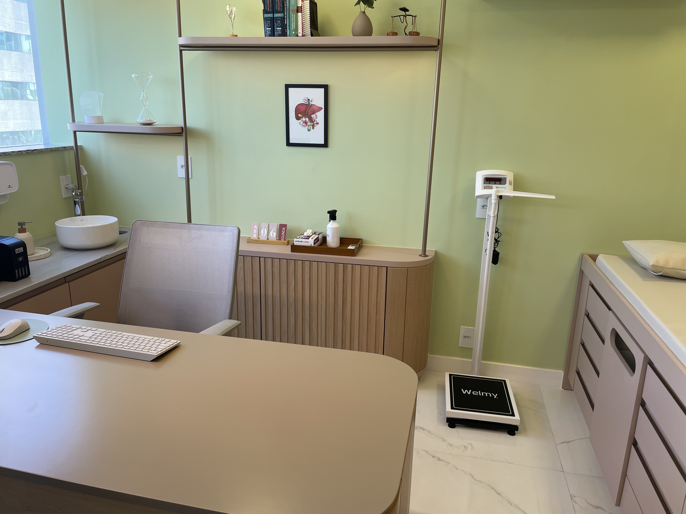
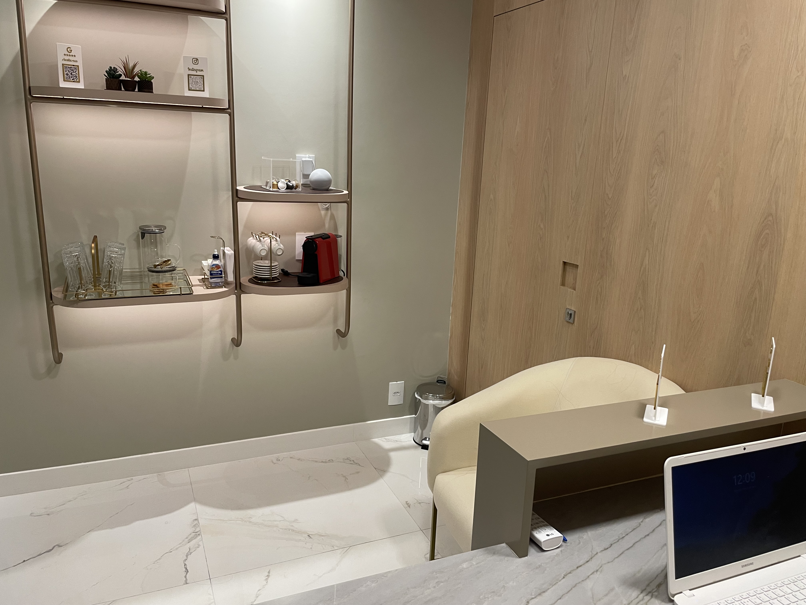
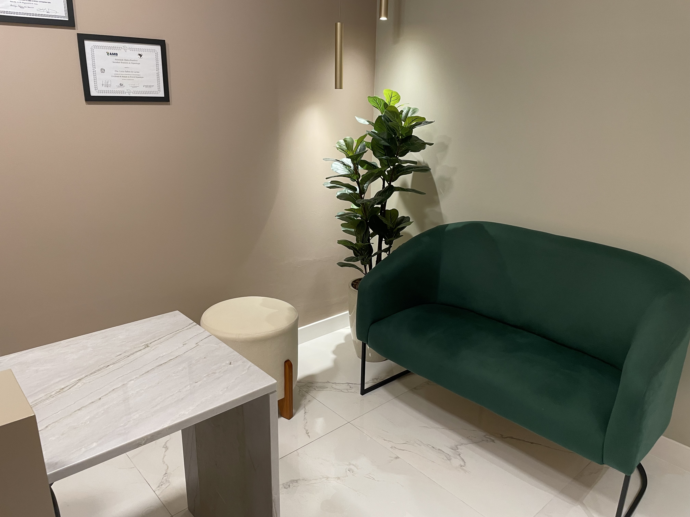

Médica gastroenterologista e hepatologista com atuação voltada ao cuidado integral do aparelho digestivo e das doenças do fígado.
Um atendimento pensado para quem busca escuta atenta, avaliação cuidadosa e um plano de cuidado individualizado, com explicações claras e tratamento ajustado à realidade de cada paciente.
Formação sólida, experiência clínica e um cuidado médico centrado nas necessidades de cada paciente.
A Dra. Luiza Fabres do Carmo é médica gastroenterologista e hepatologista, formada há 15 anos, com residência médica pela Universidade Federal de São Paulo (UNIFESP) e professora de Medicina da EMESCAM.
Possui ampla experiência no cuidado integral do aparelho digestivo e das doenças do fígado, atuando no diagnóstico, acompanhamento e definição de condutas médicas personalizadas para diferentes quadros clínicos.
Na área de hepatologia, realiza a avaliação e o acompanhamento das doenças hepáticas, incluindo o estadiamento do fígado, que permite identificar o grau de comprometimento do órgão e orientar o melhor plano de tratamento e monitoramento.
Gastroenterologia e hepatologia estão relacionadas, mas cada uma cuida de áreas específicas da saúde digestiva.
A gastroenterologia é a especialidade médica voltada ao diagnóstico e tratamento das doenças do aparelho digestivo. Isso inclui alterações do esôfago, estômago, intestino, pâncreas e outras estruturas ligadas à digestão. Queixas como refluxo, gastrite, dor abdominal, distensão, alteração do funcionamento intestinal, constipação e diarreia estão entre os motivos mais comuns de avaliação nessa área.
Já a hepatologia é a área dedicada ao cuidado das doenças do fígado e das vias biliares. Envolve a investigação, o acompanhamento e o tratamento de quadros como gordura no fígado, hepatites, cirrose, doenças metabólicas, doenças colestáticas e nódulos hepáticos.
Embora sejam especialidades diferentes, elas se complementam. Muitas vezes, sintomas digestivos e alterações hepáticas precisam ser avaliados de forma integrada, para que o paciente receba um diagnóstico mais preciso e um plano de cuidado mais adequado.
O acompanhamento com uma médica que atua nas duas áreas permite uma visão mais ampla da saúde digestiva e hepática, favorecendo uma avaliação mais completa e condutas mais individualizadas.
Como hepatologista, as principais condições acompanhadas são:
A esteatose hepática é uma condição frequente e muitas vezes silenciosa. Em alguns casos, pode evoluir com inflamação, fibrose e até cirrose quando não é acompanhada adequadamente. A avaliação médica ajuda a identificar o grau de comprometimento do fígado e a definir a melhor estratégia de acompanhamento.
As hepatites virais podem ter comportamentos diferentes e nem sempre provocam sintomas logo no início. O diagnóstico correto e o seguimento especializado são importantes para avaliar atividade da doença, risco de progressão e necessidade de tratamento ou monitoramento contínuo.
Na hepatite autoimune, o sistema imunológico passa a atacar o fígado. O acompanhamento especializado é fundamental para controlar a inflamação, preservar a função hepática e evitar a progressão da doença.
A cirrose é um estágio mais avançado de comprometimento do fígado e exige acompanhamento cuidadoso. Com avaliação adequada, é possível monitorar a evolução da doença, prevenir complicações e organizar um plano de cuidado individualizado.
Esse grupo inclui doenças como hemocromatose e colangite biliar primária. São condições que precisam de diagnóstico preciso e acompanhamento contínuo para melhor controle e prevenção de danos progressivos ao fígado.
A presença de nódulos hepáticos deve ser avaliada com atenção. Nem todo nódulo representa gravidade, mas é importante investigar corretamente, acompanhar quando necessário e definir a conduta mais adequada para cada caso.
Na gastroenterologia, a Dra. Luiza Fabres do Carmo atua no diagnóstico e tratamento de doenças do esôfago, estômago, intestino e pâncreas, tanto orgânicas quanto funcionais, sempre buscando uma abordagem prática, clara e individualizada.
Atendimento realizado de forma presencial e por teleconsulta, com o mesmo cuidado, atenção e qualidade.
A Dra. Luiza Fabres do Carmo realiza atendimentos tanto presenciais quanto por teleconsulta, permitindo que pacientes de diferentes localidades tenham acesso a uma avaliação especializada.
Em ambos os formatos, a consulta é conduzida com escuta atenta, análise detalhada e orientação clara, garantindo um cuidado individualizado e completo.
As consultas têm duração média de uma hora, permitindo uma avaliação cuidadosa e sem pressa.
São analisados histórico de saúde, sintomas, exames, hábitos de vida e alimentação, proporcionando uma visão ampla do quadro clínico.
Ao final, é elaborado um plano de cuidado individualizado, com orientações médicas, estratégias práticas e, quando necessário, solicitação de exames e tratamento medicamentoso.
Após a consulta inicial, o paciente tem direito a uma consulta de retorno para acompanhamento das orientações realizadas, avaliação de resultados de exames e ajustes no plano de tratamento.
O retorno pode ser realizado em até 30 dias, contribuindo para um acompanhamento mais seguro e efetivo da evolução clínica.
A Dra. Luiza Fabres do Carmo realiza seus atendimentos de forma exclusivamente particular.
Ao longo de sua trajetória, a Dra. Luiza também já atuou por meio de convênios. Com o tempo, optou por direcionar seu atendimento para um modelo particular, que permite oferecer consultas com maior tempo de dedicação, escuta atenta e avaliação detalhada de cada paciente.
Esse formato possibilita um cuidado mais individualizado, com análise aprofundada do histórico de saúde e definição de condutas mais adequadas às necessidades de cada caso.
As consultas têm duração média de uma hora e incluem avaliação clínica completa, orientação detalhada e acompanhamento direcionado conforme a necessidade de cada paciente.
Valor da consulta: R$ 450,00
Fornecemos Nota Fiscal para fins de reembolso junto ao seu plano de saúde, de acordo com as regras de cada operadora.
Informações claras e confiáveis para ajudar o paciente a compreender melhor sintomas, prevenção e acompanhamento médico.
O fígado participa de funções essenciais do organismo e, muitas vezes, pode adoecer sem provocar sintomas claros no início. Por isso, a prevenção é um ponto importante no cuidado com a saúde.
Entre as medidas mais relevantes estão evitar o consumo excessivo de álcool, manter uma alimentação equilibrada, controlar o peso, praticar atividade física, acompanhar taxas metabólicas como glicose e colesterol e não usar medicamentos sem orientação médica.
Em alguns casos, a vacinação e o acompanhamento periódico também ajudam a identificar alterações precocemente, antes que a doença avance.
A alimentação influencia diretamente o funcionamento do aparelho digestivo. Em muitos casos, desconfortos como estufamento, azia, sensação de má digestão, alteração do intestino e peso abdominal podem estar relacionados a hábitos alimentares inadequados ou à forma como cada organismo responde a certos alimentos.
Uma rotina alimentar mais equilibrada, com boa hidratação, consumo adequado de fibras e refeições organizadas, costuma contribuir para melhora dos sintomas digestivos e também para o cuidado do fígado.
Queimação, azia, sensação de alimento voltando, dor no estômago, empachamento e desconforto após as refeições são queixas comuns. Embora possam estar associadas a quadros como gastrite e refluxo, esses sintomas precisam ser avaliados com cuidado.
Quando os sintomas são persistentes, frequentes ou impactam a qualidade de vida, vale buscar avaliação especializada.
As hepatites podem ter diferentes causas e comportamentos. Algumas se resolvem, enquanto outras exigem controle e seguimento ao longo do tempo.
Muitas doenças hepáticas evoluem de forma silenciosa. Isso significa que a pessoa pode se sentir relativamente bem mesmo quando já existe inflamação ou lesão no fígado. Por isso, o acompanhamento médico é importante para avaliar atividade da doença, risco de progressão e necessidade de tratamento.
Exames laboratoriais e de imagem podem ser fundamentais para investigar alterações do fígado, acompanhar doenças já diagnosticadas e orientar decisões clínicas com mais segurança.
Mais do que simplesmente pedir exames, o importante é saber quando eles são indicados e como utilizar essas informações para montar um plano de cuidado individualizado.
Participação na elaboração de capítulos em manuais voltados à formação de médicos clínicos e residentes.
Capítulo do Manual de Hepatologia para Clínicos e Residentes (2018), abordando diagnóstico, manejo clínico e acompanhamento dessa importante complicação das doenças hepáticas.
Capítulo do Manual de Hepatologia para Clínicos e Residentes (2018), com enfoque na identificação, fisiopatologia e estratégias de tratamento dessa condição grave associada à doença hepática avançada.
Capítulo do Manual de Hepatologia para Clínicos e Residentes (2018), discutindo riscos, avaliação pré-operatória e cuidados necessários em pacientes com comprometimento hepático.
Capítulo do Manual de Gastroenterologia para Clínicos e Residentes (2018), abordando diagnóstico, tratamento e acompanhamento dessas condições frequentes na prática clínica.
Capítulo do Manual de Gastroenterologia para Clínicos e Residentes (2018), incluindo doença biliar alitiásica, colesterolose, adenomiomatose e pólipos da vesícula biliar.
Um ambiente pensado para acolher o paciente com conforto, privacidade e tranquilidade durante o atendimento.





Agende sua consulta e receba um atendimento cuidadoso, com avaliação completa da saúde digestiva e hepática.
WhatsApp: (27) 99506-5091 Atendemos ligações e ouvimos áudios
Endereço:
Rua João Pessoa de Matos, 530 - sala 603
Edifício Premium Office Tower – Praia da Costa – Vila Velha/ES